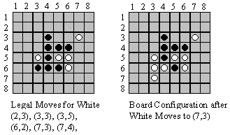
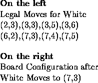

| Othello |
Othello is a game played by two people on an 8 x 8 board, using disks that are white on one side and black on the other. One player places disks with the white side up and the other player places disks with the black side up. The players alternate placing one disk on an unoccupied space on the board. In placing a disk, the player must bracket at least one of the other color disks. Disks are bracketed if they are in a straight line horizontally, vertically, or diagonally, with a disk of the current player's color at each end of the line. When a move is made, all the disks that were bracketed are changed to the color of the player making the move. (It is possible that disks will be bracketed across more than one line in a single move.)
 
Write a program to read a series of Othello games. The first line of the input is the number of games to be processed. Each game consists of a board configuration followed by a list of commands. The board configuration consists of 9 lines. The first 8 specify the current state of the board. Each of these 8 lines contains 8 characters, and each of these characters will be one of the following:
`-' indicating an unoccupied square`B' indicating a square occupied by a black disk
`W' indicating a square occupied by a white disk
The ninth line is either a `B' or a `W' to indicate which is the current player. You may assume that the data is legally formatted.
The commands are to list all possible moves for the current player, make a move, or quit the current game. There is one command per line with no blanks in the input. Commands are formatted as follows:
All legal moves should be put on one line. If there is no legal move because it is impossible for the current player to bracket any pieces, the program should print the message ``No legal move."
You may assume that the commands will be syntactically correct. Put one blank line between output from separate games and no blank lines anywhere else in the output.
2 -------- -------- -------- ---WB--- ---BW--- -------- -------- -------- W L M35 L Q WWWWB--- WWWB---- WWB----- WB------ -------- -------- -------- -------- B L M25 L Q
(3,5) (4,6) (5,3) (6,4) Black - 1 White - 4 (3,4) (3,6) (5,6) -------- -------- ----W--- ---WW--- ---BW--- -------- -------- -------- No legal move. Black - 3 White - 12 (3,5) WWWWB--- WWWWW--- WWB----- WB------ -------- -------- -------- --------